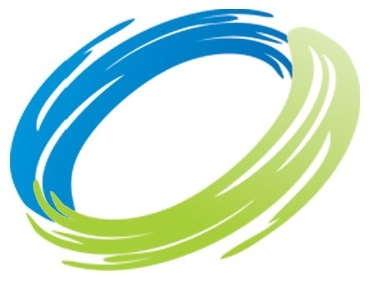
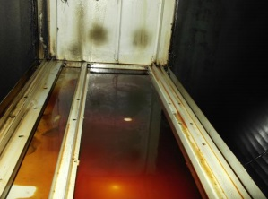

Dar um ponto de entrada a cada serviço
Agrupei os serviços por exaustão, climatização e limpeza de espaços. Quem chega pode começar pela sua necessidade e abrir os detalhes dessa área.

RP LIMPEZASLimpezas industriaisExaustão · Climatização · Limpezas
Conheça os serviços da RP Limpezas e comece por explicar o que precisa de ser intervencionado.
Encontrar um serviçoGondomar · Serviços para empresas e particulares
Por onde começar
01ExaustãoLimpeza, auditoria e instalação02ClimatizaçãoLimpeza, instalação e manutenção03Limpeza de espaçosFinal de obra, cozinhas e outros espaços01 / Os serviços
Três pontos de entrada para explorar os serviços publicados pela RP Limpezas.
Sistemas de exaustão
Limpeza robotizada ou manual, auditorias e instalação de sistemas de exaustão.
Descrever este pedidoAr condicionado e AVAC
Explique que sistema existe no espaço e se procura limpeza, instalação ou manutenção.
Descrever este pedidoEspaços e superfícies
Uma cozinha, um condomínio ou uma obra terminada têm contextos diferentes. Essa informação deve acompanhar o pedido.
Descrever este pedido02 / O trabalho por dentro
A RP Limpezas já publica fotografias e vídeos do trabalho. Esses registos podem ajudar a explicar uma etapa, o equipamento utilizado e o serviço a que dizem respeito.
Consultar os registos no site oficial
03 / Um pedido com contexto
Experimente organizar a informação que acompanha o pedido. Não é necessário indicar nome, email ou telefone.
Esta demonstração não envia nem guarda dados. A escolha não substitui a avaliação da RP Limpezas.
Resumo local · nada foi enviado
A disponibilidade, o âmbito e as condições teriam de ser confirmados com a empresa.Uma proposta de Ricardo Almeida
Preparei esta demonstração a partir dos serviços e imagens publicados pela RP Limpezas. É uma proposta independente, sem aprovação da empresa.
Agrupei os serviços por exaustão, climatização e limpeza de espaços. Quem chega pode começar pela sua necessidade e abrir os detalhes dessa área.
O site já tem vídeos. Proponho dar-lhes contexto junto do serviço: o que está a ser feito e porquê. Numa futura filmagem autorizada, acompanharia uma intervenção e prepararia uma explicação curta para essa secção.
O percurso acima organiza a área, o tipo de espaço e a necessidade num resumo. Nesta demonstração não envia nada; mostra que informação poderia acompanhar um pedido real.
Um exemplo do meu trabalho
Na Canvas Custom Furniture, filmei e editei a produção e integrei o filme no website. O exemplo mostra como junto imagens do trabalho real à apresentação da empresa.
Ver o projeto CanvasRicardo Almeida · Vídeo e websites